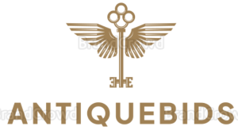

;
Frequently Asked Questions
- How do I bid on items?
To bid on items, first, you need to create an account on AntiqueBids. Once logged in, navigate to the Catalogue section, where you can browse through the available items. Click on an item to view its details and place your bid. Make sure to review the item description and bidding instructions before placing your bid.
- How does the auction process work?
AntiqueBids operates on a real-time auction model. When you place a bid on an item, it enters into the auction process. Other users can then place higher bids, and the highest bidder at the end of the auction wins the item. Auction durations vary for each item, so make sure to keep an eye on the countdown timer.
- Can I sell items on AntiqueBids?
Yes, we welcome sellers to list their items on AntiqueBids. If you're interested in selling, you can create a seller account and start listing your items for auction. Our platform provides tools and resources to help you manage your listings and communicate with potential buyers.
- How can I contact customer support?
If you have any questions, concerns, or need assistance, our customer support team is here to help. You can reach us through the "Contact Us" page on our website, where you can submit your inquiry, and one of our representatives will get back to you promptly.
- Are there any fees associated with using AntiqueBids?
AntiqueBids is free to use for buyers. However, sellers may be subject to listing fees or commissions based on the final sale price of their items. Be sure to review our seller terms and conditions for more information on fees and charges.